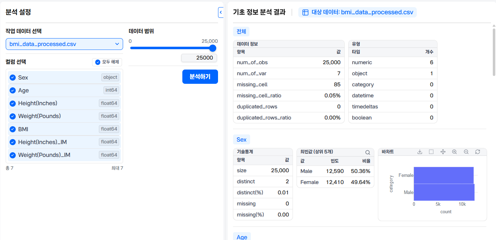
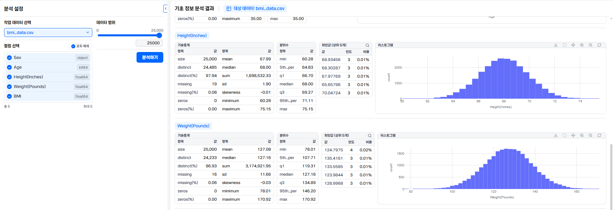
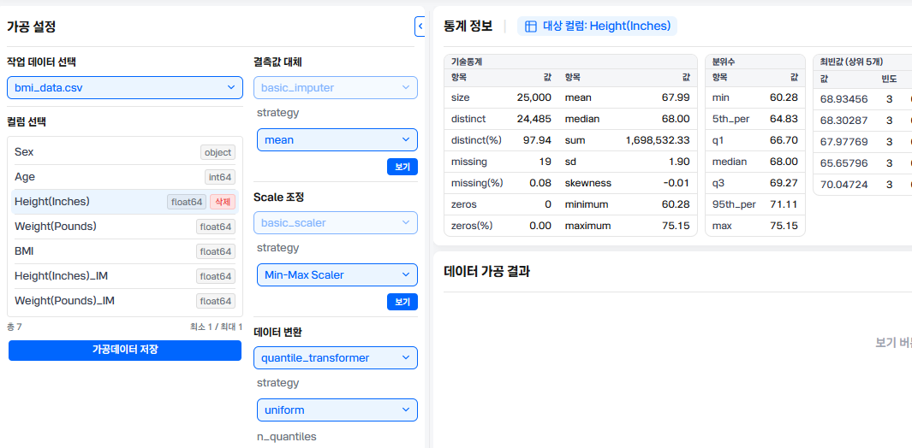
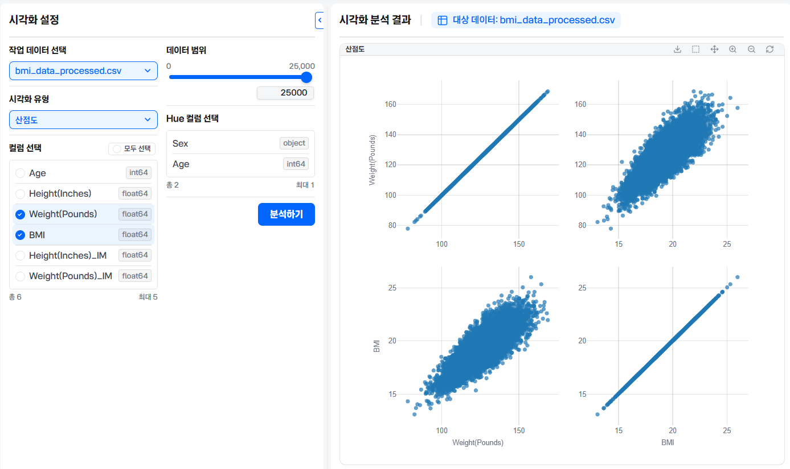
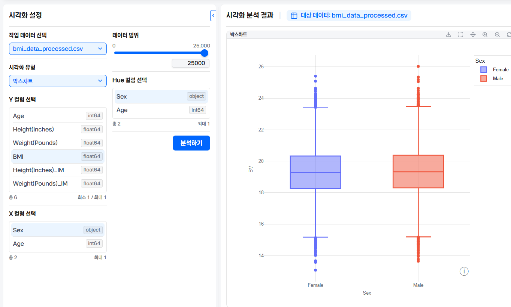
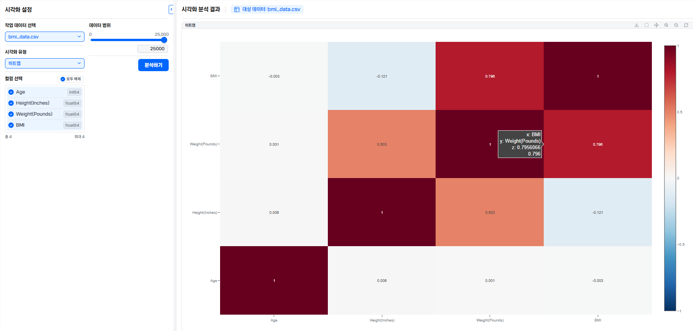
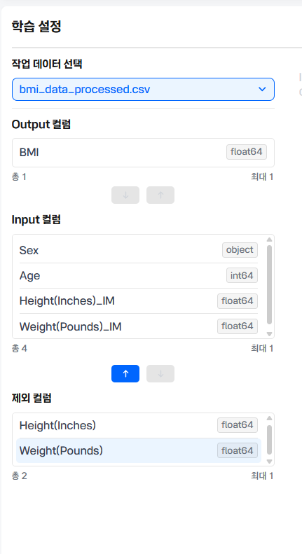
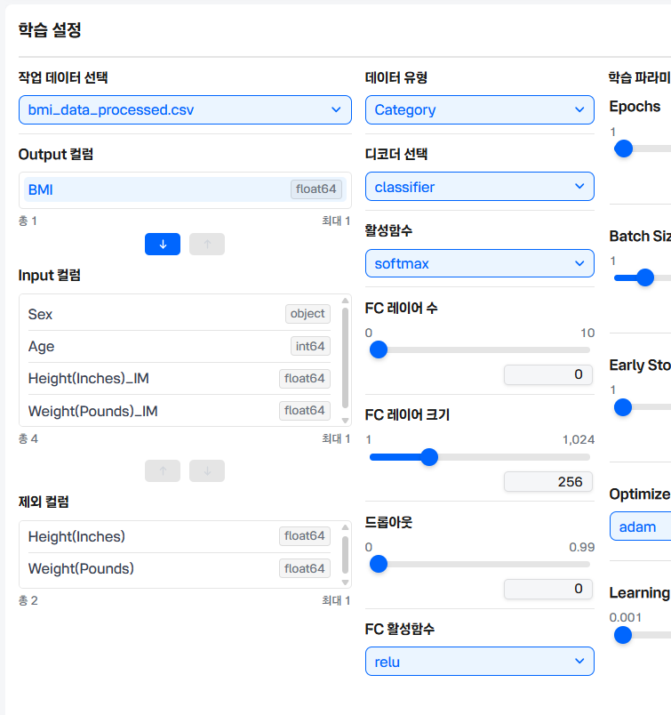
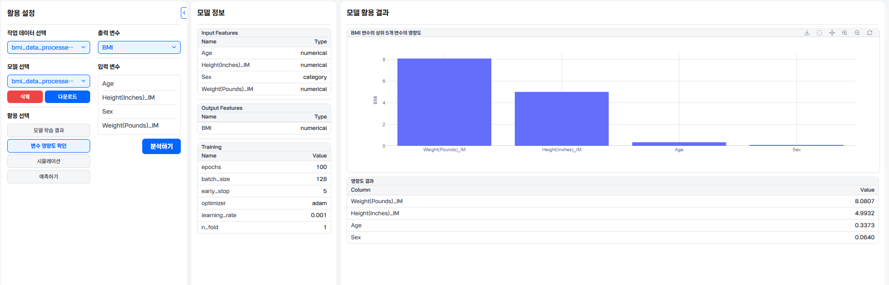
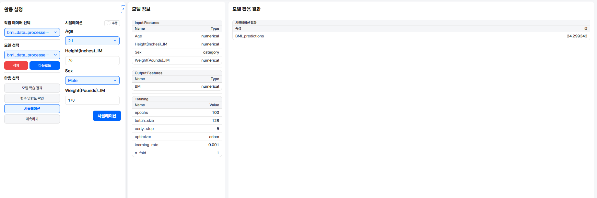

파일 업로드 (CSV/Excel)
로컬 저장소에 있는 CSV, Excel, JSON 등의 정형 데이터 파일을 업로드.
데이터 가져오기 (Data Loading)
실습에 사용할 정제된 모바일 중고기기 데이터를 불러옵니다.
어떤 데이터가 필요할까?
bmi_data.csv
BMI예측?
비만과 과체중의 의미를 파악하고 비만 지수 예측의 중요성을 설명할 수 있으며 정확한 BMI예측을 위한 문제를 정의할수 있다
데이터 가져오기
분석 데이터 문제정의
문제정의
정확한 BMI예측을 위한 문제를 정의할수 있다
BMI 계산기
데이터 컬럼명
- id : 고유번호
- area : 면적
- vertical_length : 장축길이
- horizontal_length : 보조축길이
- eccentricity : 이심률
- convex_area : 볼록면적
- diameter : 지름
- perimeter : 둘레
- roundness : 원형율
- thickness : 두께
- rice_type : 쌀종류
기초정보 분석
데이터의 평균, 중앙값, 최빈값, 표준편차 등 핵심 통계 지표를 한눈에 파악합니다.
🧯문제
종속변수와 독립변수를 작성하세요
💊힌트
🧯문제
중복행의 갯수는?
💊힌트

🧯문제
데이터의 전체 개수(observation)를 작성하시오.
💊힌트
🧯문제
수치형 컬럼과 문자형 컬럼 수를 작성하시오.
💊힌트
🧯문제
몸무게 칼럼에서 최소값은?
💊힌트

🧯문제
키 칼럼의 결측값은 ?
💊힌트

시각화분석
데이터 내 누락된 값(NaN)의 분포와 정상 범위를 벗어난 아웃라이어를 찾아냅니다.
🧯문제
산점도에서 몸무게와BMI 로 컬럼을 선택하고 분석 결과에 대해 설명하세요 [산점도]
💊힌트

🧯문제
남자, 여자 의 체질량분석에서 중앙값을 작성하세요 [박스차트]
💊힌트

🧯문제
BMI와 각칼럼간의 상관관계가 높은 순서대로 작성하세요
💊힌트

비지도학습분석
군집화 및 차원 축소 등의 비지도 학습 기법을 활용하여 데이터의 구조를 파악합니다.
비지도학습
비지도 학습 관련 실습 및 문제 영역입니다.
데이터 샘플보기
데이터를 확인 할 수 있습니다.
데이터샘플
데이터 가공
결측치와 중복 데이터를 처리하고 정돈된 형태로 정제합니다.
🧯문제
키의 결측치(missing cells)의 대체값은 최빈값, 중앙값, 평균값, 상수 중 무엇으로(1) 해야하며 , 해당 값으로 대체 했을경우 대체값은(2) ?
💊힌트
머신러닝 학습
머신러닝 알고리즘을 선택하고 학습을 진행합니다.
딥러닝 학습
모델의 학습 성능에 영향을 주는 세부 파라미터 값(학습률, 트리 깊이 등)을 지정합니다.
딥러닝 학습
🧯문제
딥러닝 학습에서 Output칼럼과, 제외칼럼 , input 칼럼을 작성 하세요
💊힌트

🧯문제
Ouptut 컬럼은 데이터 유형과, 디코더 선택, 활성화 함수를 어떻게 설정 해야 하는지 작성 하시오
💊힌트

AI 모델 활용
새로운 대량의 데이터셋을 모델에 입력하여 일괄적인 예측 결과 값을 도출합니다.
변수영향도 확인
🧯문제
학습한 딥러닝 모델 분석 결과,BMI를 결정하는데 가장 중 요한 요소를 작성하시오
💊힌트

시뮬레이션
🧯문제
학습한 딥러닝 모델 분석 결과 시뮬레이션을 아래의 조건에 맞게 실행후 결과를 작성하시오
💊힌트
